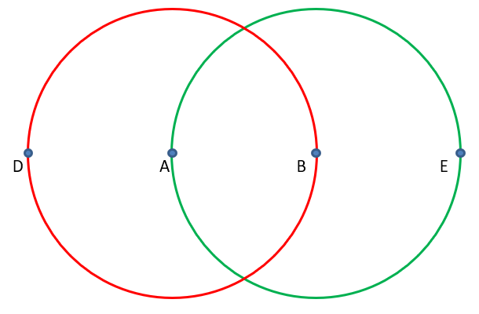
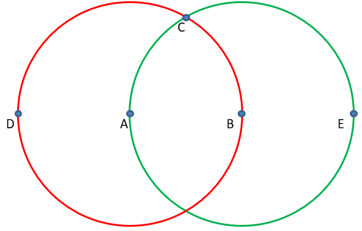
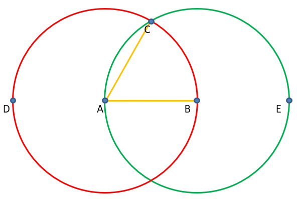
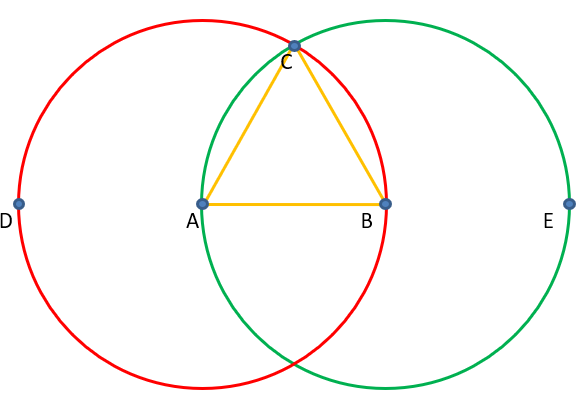

The picture below shows two circles with the same radius length, a red circle and green circle:
Let points D and B be the diameter of the red circle, and let point A and E be the diameter of the green circle. Points D, A, B and E form a straight line. Now let point C be the top intersection of the two circles:
If we place the two triangles in a way such that point A is the center of the red circle, then line AB and line AC would both be a radii of the red circle:
Since the diameter of both circles is the same, then B is the center of the green circle, which means line AB and line BC are both radii of the green circle:
Since AB = AC = BC, then ABC is an equilateral triangle.